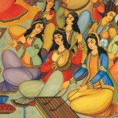
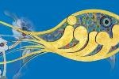

<?xml version="1.0" encoding="UTF-8"?><rss version="2.0"
	xmlns:content="http://purl.org/rss/1.0/modules/content/"
	xmlns:wfw="http://wellformedweb.org/CommentAPI/"
	xmlns:dc="http://purl.org/dc/elements/1.1/"
	xmlns:atom="http://www.w3.org/2005/Atom"
	xmlns:sy="http://purl.org/rss/1.0/modules/syndication/"
	xmlns:slash="http://purl.org/rss/1.0/modules/slash/"
	>

<channel>
	<title>Center for Iranian Music &#187; events</title>
	<atom:link href="index.html" rel="self" type="application/rss+xml" />
	<link>https://centerforiranianmusic.org</link>
	<description> The Center for Iranian Music (CFIM) strives to preserve and promote Iranian music, including traditional music (the Dastgâh System), folk music (regional music of Iran), contemporary music, and commemorative and religious music.</description>
	<lastBuildDate>Tue, 02 Aug 2016 18:06:26 +0000</lastBuildDate>
	<language>en-US</language>
	<sy:updatePeriod>hourly</sy:updatePeriod>
	<sy:updateFrequency>1</sy:updateFrequency>
	<generator>https://wordpress.org//?v=4.2.10</generator>
	<item>
		<title>Heart Strums Concert Online Ticketing, فروش انلاین بلیط کنسرت زخمه دل</title>
		<link>https://centerforiranianmusic.org/uncategorized/heart-strums-concert-online-ticketing-%d9%81%d8%b1%d9%88%d8%b4-%d8%a7%d9%86%d9%84%d8%a7%db%8c%d9%86-%d8%a8%d9%84%db%8c%d8%b7-%da%a9%d9%86%d8%b3%d8%b1%d8%aa-%d8%b2%d8%ae%d9%85%d9%87-%d8%af%d9%84</link>
		<comments>https://centerforiranianmusic.org/uncategorized/heart-strums-concert-online-ticketing-%d9%81%d8%b1%d9%88%d8%b4-%d8%a7%d9%86%d9%84%d8%a7%db%8c%d9%86-%d8%a8%d9%84%db%8c%d8%b7-%da%a9%d9%86%d8%b3%d8%b1%d8%aa-%d8%b2%d8%ae%d9%85%d9%87-%d8%af%d9%84#comments</comments>
		<pubDate>Tue, 02 Aug 2016 18:05:08 +0000</pubDate>
		<dc:creator><![CDATA[Zahra Mohebbi]]></dc:creator>
				<category><![CDATA[events]]></category>
		<category><![CDATA[Uncategorized]]></category>

		<guid isPermaLink="false">https://centerforiranianmusic.org/?p=541</guid>
		<description><![CDATA[https://www.eventbrite.com/e/heart-strums-concert-of-persian-classical-music-tickets-26850851620
Online ticketing
]]></description>
				<content:encoded><![CDATA[<p>https://www.eventbrite.com/e/heart-strums-concert-of-persian-classical-music-tickets-26850851620</p>
<p><a href="https://www.eventbrite.com/e/heart-strums-concert-of-persian-classical-music-tickets-26850851620">Online ticketing</a></p>
]]></content:encoded>
			<wfw:commentRss>https://centerforiranianmusic.org/uncategorized/heart-strums-concert-online-ticketing-%d9%81%d8%b1%d9%88%d8%b4-%d8%a7%d9%86%d9%84%d8%a7%db%8c%d9%86-%d8%a8%d9%84%db%8c%d8%b7-%da%a9%d9%86%d8%b3%d8%b1%d8%aa-%d8%b2%d8%ae%d9%85%d9%87-%d8%af%d9%84/feed</wfw:commentRss>
		<slash:comments>0</slash:comments>
		</item>
		<item>
		<title>Heart Strums Concert of Persian Classical Music</title>
		<link>https://centerforiranianmusic.org/events/zakhmeh-del-concert</link>
		<comments>https://centerforiranianmusic.org/events/zakhmeh-del-concert#comments</comments>
		<pubDate>Fri, 29 Jul 2016 02:33:26 +0000</pubDate>
		<dc:creator><![CDATA[Zahra Mohebbi]]></dc:creator>
				<category><![CDATA[events]]></category>

		<guid isPermaLink="false">https://centerforiranianmusic.org/?p=537</guid>
		<description><![CDATA[
]]></description>
				<content:encoded><![CDATA[<p><a href="../../../wp-content/uploads/2016/07/image1.jpg"></a></p>
]]></content:encoded>
			<wfw:commentRss>https://centerforiranianmusic.org/events/zakhmeh-del-concert/feed</wfw:commentRss>
		<slash:comments>0</slash:comments>
		</item>
		<item>
		<title>Santur class</title>
		<link>https://centerforiranianmusic.org/uncategorized/santur-class</link>
		<comments>https://centerforiranianmusic.org/uncategorized/santur-class#comments</comments>
		<pubDate>Thu, 28 Jul 2016 04:11:13 +0000</pubDate>
		<dc:creator><![CDATA[Zahra Mohebbi]]></dc:creator>
				<category><![CDATA[events]]></category>
		<category><![CDATA[Uncategorized]]></category>

		<guid isPermaLink="false">https://centerforiranianmusic.org/?p=534</guid>
		<description><![CDATA[The Center for Iranian Music is excited to announce that Dr. Dariush Saghafi will be offering a monthly Santur class starting on Tuesday, September 6, 2016. The class will be held on the first Tuesday of ...]]></description>
				<content:encoded><![CDATA[<div>The Center for Iranian Music is excited to announce that Dr. Dariush Saghafi will be offering a monthly Santur class starting on <span class="aBn" tabindex="0" data-term="goog_236238581"><span class="aQJ">Tuesday, September 6, 2016</span></span>. The class will be held on the first <span class="aBn" tabindex="0" data-term="goog_236238582"><span class="aQJ">Tuesday</span></span> of every month at <span class="aBn" tabindex="0" data-term="goog_236238583"><span class="aQJ">6:00 PM</span></span> in the School of Music, College of Fine Arts at Carnegie Mellon University.</div>
<div>Dr. Saghafi is generously offering his time and expertise free of charge to the Center for Iranian Music. However, donations to The Center for Iranian Music will be accepted from individuals that register for the class. The suggested donation amount is $50 per session. <b>If you are interested, please  call Dr Bijan Elyaderani 724-799-2067 or 412-779-4011 with your name and e-mail address.<br />
</b></div>
<div>Thank you,</div>
<div>Bijan Elyaderani</div>
<div>Executive Director, CFIM</div>
<div></div>
<div><b><u>2016 Class Schedule</u></b></div>
<div>•   Tuesday, September 6</div>
<div>•   Tuesday, October 4</div>
<div>•   No class in November</div>
<div>.    Tuesday, December 6</div>
]]></content:encoded>
			<wfw:commentRss>https://centerforiranianmusic.org/uncategorized/santur-class/feed</wfw:commentRss>
		<slash:comments>0</slash:comments>
		</item>
		<item>
		<title>Music from an Ancient Land: Traditional, Folk, and Contemporary Music of Iran</title>
		<link>https://centerforiranianmusic.org/events/music-from-an-ancient-land-traditional-folk-and-contemporary-music-of-iran-2</link>
		<comments>https://centerforiranianmusic.org/events/music-from-an-ancient-land-traditional-folk-and-contemporary-music-of-iran-2#comments</comments>
		<pubDate>Wed, 06 Jul 2016 15:33:47 +0000</pubDate>
		<dc:creator><![CDATA[Zahra Mohebbi]]></dc:creator>
				<category><![CDATA[events]]></category>

		<guid isPermaLink="false">https://centerforiranianmusic.org/?p=532</guid>
		<description><![CDATA[Center for Iranian Music Presents:
Music from an Ancient Land:
Traditional, Folk, and Contemporary Music of Iran
BXA / School of Music Course, Carnegie Mellon University
Instructor: Reza Vali
Time and Place: Thursday 6:30-8:20 P.M., CFA A2
Cross Register Students are ...]]></description>
				<content:encoded><![CDATA[<p><strong>Center for Iranian Music Presents:</strong></p>
<p><strong>Music from an Ancient Land:</strong></p>
<p><strong>Traditional, Folk, and Contemporary Music of Iran</strong></p>
<p><strong>BXA / School of Music Course, Carnegie Mellon University</strong></p>
<p><strong>Instructor: Reza Vali</strong></p>
<p><strong>Time and Place: Thursday 6:30-8:20 P.M., CFA A2</strong></p>
<p><strong><u>Cross Register Students are Welcome. Auditing Students or Community Members are Welcome. </u></strong></p>
<p><strong>For more information, please contact Sharon Johnston (slj@andrew.cmu.edu), or Emily Syes (esyes@andrew.cmu.edu)</strong></p>
]]></content:encoded>
			<wfw:commentRss>https://centerforiranianmusic.org/events/music-from-an-ancient-land-traditional-folk-and-contemporary-music-of-iran-2/feed</wfw:commentRss>
		<slash:comments>0</slash:comments>
		</item>
		<item>
		<title>Special Thanks to the Segah Festival Donors</title>
		<link>https://centerforiranianmusic.org/events/special-thanks-to-the-segah-festival-donors</link>
		<comments>https://centerforiranianmusic.org/events/special-thanks-to-the-segah-festival-donors#comments</comments>
		<pubDate>Tue, 05 Jan 2016 15:43:08 +0000</pubDate>
		<dc:creator><![CDATA[Zahra Mohebbi]]></dc:creator>
				<category><![CDATA[events]]></category>

		<guid isPermaLink="false">https://centerforiranianmusic.org/?p=524</guid>
		<description><![CDATA[We would like to give very special thanks to our donors for their generous donations to the Segah Festival of Persian and Turkish music.

Mr. John J. Ghaznavi
Dr. and Mrs. Darius Saghafi
Dr. and Mrs. Mahnaz Baghai
Mr. ...]]></description>
				<content:encoded><![CDATA[<div class="textLayer"><span class="st" data-canvas-width="243.25200000000004">We would like to give very special thanks to our donors </span>for their generous donations to the Segah Festival of Persian and Turkish music.</div>
<div class="textLayer"></div>
<div class="textLayer">Mr. John J. Ghaznavi</div>
<div class="textLayer">Dr. and Mrs. Darius Saghafi</div>
<div class="textLayer">Dr. and Mrs. Mahnaz Baghai</div>
<div class="textLayer">Mr. Norman Weizenbaum</div>
<div class="textLayer">Dr. and Mrs. Morteza Elyaderani</div>
<div class="textLayer">Drs. Nezam Radfar, Rouhangiz H. Radfar</div>
<div class="textLayer">Mr. and Mrs. Ali Rahmanian</div>
<div class="textLayer">Dr. and Mrs. Nasser J. Sonbolian</div>
<div class="textLayer">Dr. Kobra Karimkhani</div>
<div class="textLayer">Mr. and Mrs. Azizeh Haji-Djafari</div>
<div class="textLayer">Mrs. Arezou Daneschvar</div>
<div class="textLayer">Mr. Babak Barmar</div>
<div class="textLayer">Mr. Brian Kruman</div>
<div class="textLayer">Mrs. Farah Jahdi</div>
<div class="textLayer">Dr. and Mrs. Nematollah Mirzabeigi</div>
<div class="textLayer">Drs. Shapoor and Firoozeh Molaparast Vali</div>
<div class="textLayer">Dr. Neptune Kasraie Bazmi</div>
<div class="textLayer">Mr. Javad Ashrafi</div>
<div class="textLayer">Mr. and Mrs. Rahim Sotoodefar</div>
<div class="textLayer">Dr. and Mrs. Ali A. Maknoon</div>
<div class="textLayer">Dr. and Mrs. Ghasem Parva</div>
<div class="textLayer">Dr. Abdolreza Zarnegar</div>
<div class="textLayer">Ms. Bahar B. Bazmi</div>
<div class="textLayer">Mr. Dean Campbell</div>
<div class="textLayer">Dr. and Mrs. Lorenz Biegler</div>
<div class="textLayer">Istanbul Sofra</div>
<div class="textLayer">Mr. Adnan Pehlivan</div>
<div class="textLayer">Mr. Morris Siyman</div>
<div class="textLayer">Dr. Isa Halafir</div>
<div class="textLayer">Carnegie Mellon University School of Music</div>
<div class="textLayer">The Turkish Student Society of Carnegie Mellon University</div>
<div class="textLayer">Turkish American Student Society of the University of Pittsburgh (TASA)</div>
<div class="textLayer">Pittsburgh Turkish American Association (PTAA)</div>
<div class="textLayer">Carnegie Mellon University Graduate Student Assembly (GSA)</div>
<div class="textLayer">Carnegie Mellon University Undergraduate Student Senate</div>
<div class="textLayer">Graduate and Professional Student Government of the University of Pittsburgh</div>
<div class="textLayer"></div>
<p>&nbsp;</p>
]]></content:encoded>
			<wfw:commentRss>https://centerforiranianmusic.org/events/special-thanks-to-the-segah-festival-donors/feed</wfw:commentRss>
		<slash:comments>0</slash:comments>
		</item>
		<item>
		<title>The Segah Festival of Persian and Turkish Music</title>
		<link>https://centerforiranianmusic.org/events/the-segah-festival-of-persian-and-turkish-music</link>
		<comments>https://centerforiranianmusic.org/events/the-segah-festival-of-persian-and-turkish-music#comments</comments>
		<pubDate>Mon, 10 Aug 2015 15:08:35 +0000</pubDate>
		<dc:creator><![CDATA[Zahra Mohebbi]]></dc:creator>
				<category><![CDATA[events]]></category>

		<guid isPermaLink="false">https://centerforiranianmusic.org/?p=508</guid>
		<description><![CDATA[
The Persian and the Turkish cultures have had close to 800 years of cultural interactions. Music has played a vital role in these interactions. During the Turkish Ottoman and the Persian Safavi empires, court musicians ...]]></description>
				<content:encoded><![CDATA[<p><a href="../../../wp-content/uploads/2015/08/Main-picture-2.jpg"></a></p>
<p>The Persian and the Turkish cultures have had close to 800 years of cultural interactions. Music has played a vital role in these interactions. During the Turkish Ottoman and the Persian Safavi empires, court musicians would move from the Safavi courts to the Ottoman courts and vice versa. Some of the modes and rhythmic cycles of Persian music of the 15th to the 18th century have been preserved in the Turkish traditional music.<br />
As a result, there has been a strong connection between the Persian and the Turkish music traditions for the past 800 years.</p>
<p>The word Segâh is a Persian word that means “the third degree”. More specifically, the third degree of a mode. A mode called Segâh, which emphasizes the third degree of the mode, is shared both in Persian as well as in Turkish music. In calling a festival of Persian and Turkish music “the Segâh Festival”, we are attempting to bring the shared musical as well as the cultural history of the two civilizations to the foreground.</p>
<p><span style="color: #800000;"><strong>Segâh Festival Schedule</strong></span><br />
<span style="color: #003366;">Thursday January 14, 2016</span><br />
8:00 PM<br />
Alumni Concert Hall</p>
<p>Piano Music of Iranian and Turkish Composers.</p>
<p>Layla Ramezan, Solo Piano</p>
<p>Works by Akses, Hosseini, Kolat,<br />
Majd, Mashayekhi, Özkoç, Ranjbaran<br />
<span style="color: #003366;">Friday January 15, 2016</span><br />
8:00 PM<br />
Carnegie Music Hall</p>
<p>Traditional and Contemporary<br />
Persian and Turkish Music</p>
<p>Ismail Lumanovski, Turkish Clarinet<br />
Jahangir Mohammadi, Tombak<br />
Dariush Saghafi, Santoor<br />
Khosrow Soltani, Ney<br />
Kian Soltani, Kamanche<br />
The Segâh Festival Ensemble<br />
Daniel Nesta Curtis, Conductor<br />
Hoppa Project<br />
Erberk Eryılmaz, Conductor</p>
<p>Improvisations on the mode of Segâh<br />
Eryılmaz, Concerto for Solo Wind Instrument, Ensemble and Imaginary Folkdancers<br />
Vali, Double Concerto for Persian Ney, Kamanche and Ensemble<br />
<span style="color: #003366;">Saturday January 16, 2015</span><br />
5:30 PM<br />
Alumni Concert Hall</p>
<p>Showcase concert of Persian and<br />
Turkish Instruments</p>
<p>Ismail Lumanovski, Turkish Clarinet<br />
Jahangir Mohammadi, Tombak<br />
Dariush Saghafi, Santoor<br />
Khosrow Soltani, Ney, Sornâ,<br />
Schalmei (Shawm)<br />
Kian Soltani, Kamanche<br />
Hoppa Project,<br />
Erberk Eryılmaz, Conductor</p>
<p>Demonstration of Persian and Turkish instruments<br />
Vali, Sornâ (Folk Songs, Set No.17)<br />
Eryılmaz, Concerto for Solo Wind Instrument, Ensemble and Imaginary Folkdancers</p>
<p>Free Admission for the Carnegie Mellon University and the University of Pittsburgh<br />
(Students, Faculty and Staff)</p>
<p>For more Info:</p>
<p>www.segahfestival.com<br />
Please call us at: 724 799 2067 or 919 348 7744<br />
Email us at: segahfestival@gmail.com<br />
Message us at: The Segah Festival Facebook page</p>
<p><span class="fsl">Concert on 01/14 Free of Admission<br />
Concert on 01/15 Ticket: 10$<br />
Concert on 01/16 Ticket: 10$</span></p>
<p>For supporting us &amp; making Donation:</p>
<p><a href="https://securelb.imodules.com/s/1410/giving/form.aspx?sid=1410&amp;gid=1&amp;pgid=382&amp;cid=990&amp;appealcode=A3658&amp;dids=395">Make a Gift</a></p>
<p><span style="color: #003366;">The Segâh Festival </span><br />
<span style="color: #003366;">is sponsored by:</span></p>
<p>The Center for Iranian Music<br />
of Carnegie Mellon University</p>
<p>The Carnegie Mellon University<br />
School of Music</p>
<p>The Turkish Student Society of<br />
Carnegie Mellon University</p>
<p>The Persian Student Organization<br />
of Carnegie Mellon University</p>
<p>The Persian Panthers<br />
of the University of Pittsburgh</p>
<p>Email: segahfestival@gmail.com</p>
<p>Tel: 860-838-1991</p>
<p>FB: https://www.facebook.com/events/720713438056051/</p>
<p>&nbsp;</p>
]]></content:encoded>
			<wfw:commentRss>https://centerforiranianmusic.org/events/the-segah-festival-of-persian-and-turkish-music/feed</wfw:commentRss>
		<slash:comments>0</slash:comments>
		</item>
		<item>
		<title>Music from an Ancient Land: Traditional, Folk, and Contemporary Music of Iran</title>
		<link>https://centerforiranianmusic.org/uncategorized/music-from-an-ancient-land-traditional-folk-and-contemporary-music-of-iran</link>
		<comments>https://centerforiranianmusic.org/uncategorized/music-from-an-ancient-land-traditional-folk-and-contemporary-music-of-iran#comments</comments>
		<pubDate>Mon, 25 May 2015 01:47:58 +0000</pubDate>
		<dc:creator><![CDATA[Zahra Mohebbi]]></dc:creator>
				<category><![CDATA[events]]></category>
		<category><![CDATA[Uncategorized]]></category>

		<guid isPermaLink="false">https://centerforiranianmusic.org/?p=506</guid>
		<description><![CDATA[Center for Iranian Music Presents:
 Music from an Ancient Land:
 Traditional, Folk, and Contemporary Music of Iran
BXA / School of Music Course, Carnegie Mellon University
Instructor: Reza Vali
Time and Place: Thursday 6:30-8:20 P.M., CFA A2
Cross Register ...]]></description>
				<content:encoded><![CDATA[<p><span style="color: #993366;"><strong>Center for Iranian Music Presents:</strong></span><br />
<span style="color: #993366;"><strong> Music from an Ancient Land:</strong></span><br />
<span style="color: #993366;"><strong> Traditional, Folk, and Contemporary Music of Iran</strong></span><br />
BXA / School of Music Course, Carnegie Mellon University<br />
Instructor: Reza Vali<span class="text_exposed_show"><br />
Time and Place: <span style="color: #993366;">Thursday 6:30-8:20 P.M., CFA A2</span><br />
Cross Register Students are Welcome. Auditing Students or Community Members are Welcome.<br />
For more information, please contact Sharon Johnston (slj@andrew.cmu.edu), or Emily Syes (esyes@andrew.cmu.edu)<br />
Course Description:<br />
The Iranian civilization is one of the oldest continuing civilizations in the world. Music has played an important role in the continuation and preservation of this ancient culture. In this course, the traditional, folk, and contemporary music of Iran will be studied and discussed. The focal point of the course will be the Persian modal system, the Dástgâh. Starting with a historical survey of the ancient and medieval Persian music. different aspects of the Dástgâh system will be demonstrated and discussed. In addition, religious music and folk music of Iran as well as Iranian contemporary music will be discussed during the course.</span></p>
]]></content:encoded>
			<wfw:commentRss>https://centerforiranianmusic.org/uncategorized/music-from-an-ancient-land-traditional-folk-and-contemporary-music-of-iran/feed</wfw:commentRss>
		<slash:comments>0</slash:comments>
		</item>
		<item>
		<title>Happy Norooz, نوروزتان پیروز</title>
		<link>https://centerforiranianmusic.org/uncategorized/happy-norooz-%d9%86%d9%88%d8%b1%d9%88%d8%b2%d8%aa%d8%a7%d9%86-%d9%be%db%8c%d8%b1%d9%88%d8%b2</link>
		<comments>https://centerforiranianmusic.org/uncategorized/happy-norooz-%d9%86%d9%88%d8%b1%d9%88%d8%b2%d8%aa%d8%a7%d9%86-%d9%be%db%8c%d8%b1%d9%88%d8%b2#comments</comments>
		<pubDate>Tue, 17 Mar 2015 03:40:32 +0000</pubDate>
		<dc:creator><![CDATA[Zahra Mohebbi]]></dc:creator>
				<category><![CDATA[events]]></category>
		<category><![CDATA[Uncategorized]]></category>

		<guid isPermaLink="false">https://centerforiranianmusic.org/?p=499</guid>
		<description><![CDATA[
]]></description>
				<content:encoded><![CDATA[<p><a href="../../../wp-content/uploads/2015/03/1424439298_10934053_10152563637390216_1421721926134394797_n-Copy.jpg"></a></p>
]]></content:encoded>
			<wfw:commentRss>https://centerforiranianmusic.org/uncategorized/happy-norooz-%d9%86%d9%88%d8%b1%d9%88%d8%b2%d8%aa%d8%a7%d9%86-%d9%be%db%8c%d8%b1%d9%88%d8%b2/feed</wfw:commentRss>
		<slash:comments>0</slash:comments>
		</item>
		<item>
		<title>Concert Announcement: 12-13th February 2015</title>
		<link>https://centerforiranianmusic.org/uncategorized/concert-announcement-12-13th-february-2015</link>
		<comments>https://centerforiranianmusic.org/uncategorized/concert-announcement-12-13th-february-2015#comments</comments>
		<pubDate>Mon, 26 Jan 2015 21:23:01 +0000</pubDate>
		<dc:creator><![CDATA[Zahra Mohebbi]]></dc:creator>
				<category><![CDATA[events]]></category>
		<category><![CDATA[Uncategorized]]></category>

		<guid isPermaLink="false">https://centerforiranianmusic.org/?p=491</guid>
		<description><![CDATA[
Center for Iranian Music and The School of Music at Carnegie Mellon University present Matka Ensemble
The Swiss Ensemble Matka will travel from Lausanne, Switzerland, to Pittsburgh to present concerts of Iranian and Swiss contemporary music ...]]></description>
				<content:encoded><![CDATA[<p><a href="../../../wp-content/uploads/2015/01/Matka-concert-Final-Poster.jpg"></a></p>
<p><strong>Center for Iranian Music and The School of Music at Carnegie Mellon University present Matka Ensemble</strong></p>
<p>The Swiss Ensemble Matka will travel from Lausanne, Switzerland, to Pittsburgh to present concerts of Iranian and Swiss contemporary music at the School of Music at Carnegie Mellon University.<br />
The Ensemble Matka will perform on <strong>Thursday, February 12, 2015 at 1:30 P.M</strong>., and on <strong>Friday, February 13, 2015 at 8:00 P.M</strong>. Both concerts are free admission and will take place at the <strong>Kresge Recital Hall, College of Fine Arts, Carnegie Mellon University.</strong><br />
In addition, members of the Matka Ensemble will give a lecture at the Composers’ Forum on Friday, February 13, 2015 at 1:30 P.M. in room 157, College of Fine Arts, Carnegie Mellon University.</p>
<p>&nbsp;</p>
<p>&nbsp;</p>
]]></content:encoded>
			<wfw:commentRss>https://centerforiranianmusic.org/uncategorized/concert-announcement-12-13th-february-2015/feed</wfw:commentRss>
		<slash:comments>0</slash:comments>
		</item>
		<item>
		<title>MATKA ENSEMBLE CONCERT</title>
		<link>https://centerforiranianmusic.org/uncategorized/482</link>
		<comments>https://centerforiranianmusic.org/uncategorized/482#comments</comments>
		<pubDate>Wed, 21 Jan 2015 00:35:42 +0000</pubDate>
		<dc:creator><![CDATA[Zahra Mohebbi]]></dc:creator>
				<category><![CDATA[events]]></category>
		<category><![CDATA[Uncategorized]]></category>

		<guid isPermaLink="false">https://centerforiranianmusic.org/?p=482</guid>
		<description><![CDATA[
MATKA ENSEMBLE
Founded in Geneva in 2012, Matka is a contemporary music ensemble which offers more than
contemporary music. Its dynamic members hail from every profession in the musical world and
have a passion for organising innovative artistic ...]]></description>
				<content:encoded><![CDATA[<p style="text-align: left;"><a href="../../../wp-content/uploads/2015/01/Matka-concert-Final-Poster.jpg"></a></p>
<p style="text-align: left;">MATKA ENSEMBLE</p>
<p style="text-align: left;">Founded in Geneva in 2012, Matka is a contemporary music ensemble which offers more than<br />
contemporary music. Its dynamic members hail from every profession in the musical world and<br />
have a passion for organising innovative artistic events.</p>
<p style="text-align: left;">ECLECTISM<br />
Matka&#8217;s members interact as a young, friendly group, while simultaneously aiming at international<br />
visibility and recognition. They combine premieres of recent artistic creations with works from the<br />
twentieth-century repertoire, oscillating between parallels and contrasts, putting their artistic and<br />
technical mastery to the service of new points of view on the plurality of musical styles typical of<br />
our time.</p>
<p style="text-align: left;">OPENNESS<br />
As a contemporary music ensemble, Matka offers a programme of acoustic, acousmatic and mixed<br />
works, while always endeavouring to outpass the divisions between artistic genres, technologies and<br />
musical traditions. It reflects the cultural diversity of Geneva, creating fertile conditions for thought,<br />
encounters and debates.</p>
<p style="text-align: left;">SHARING<br />
Matka&#8217;s projects only have a meaning if they can be shared.<br />
The group makes its performances accessible to everyone by choosing original venues and<br />
organising pre-concert presentations as well as educative projects. It seeks to open up areas which<br />
are all too often perceived as elitist and to communicate with its public in a warm-hearted<br />
atmosphere, both during the concert and after, when drinks and humus are served.</p>
]]></content:encoded>
			<wfw:commentRss>https://centerforiranianmusic.org/uncategorized/482/feed</wfw:commentRss>
		<slash:comments>0</slash:comments>
		</item>
	</channel>
</rss>
